R$ 1,1bi
Mercado de corrida de rua no Brasil em 2025.Fonte: ABRACEO / CBAt
Social run de 6km leve, com DJ set em movimento acompanhando o percurso e after run com ativações e venda de produtos. Música eletrônica e street culture na cidade-ilha. Correr junto, ouvir som bom e ficar depois.
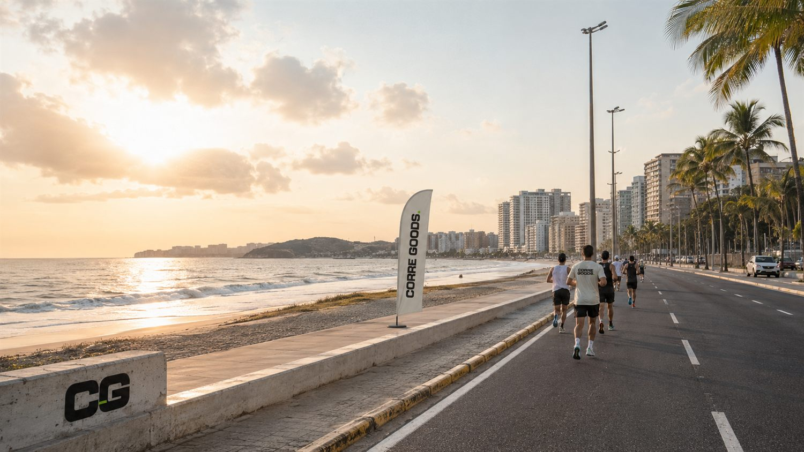
Imagem real CGCORRE GOODS nasce da união entre uma expressão brasileira e uma linguagem de lifestyle. Corre é corrida, rotina, energia, rua e vontade de fazer acontecer. Goods são os elementos que vivem em volta do percurso: a experiência, a música, a estética, a camiseta, o after run, o conteúdo e as conexões que ficam depois.
A corrida abre o encontro.
A música conduz a energia.
O after run prolonga a experiência.
A estética cria o desejo.
A marca conecta tudo isso.
CORRE GOODS combina o “corre” brasileiro com a linguagem global do streetwear — um universo onde corrida, música eletrônica, estética e after run fazem parte da mesma experiência. Corre é o movimento; Goods é o que fica: os símbolos, os encontros, os registros, as peças, os sons e as memórias de cada edição.
Uma marca para correr, ouvir, vestir, postar e repetir.
CORRE GOODS é uma experiência de social run que mistura 6km de corrida leve, música eletrônica durante o percurso e after run com collabs, ativações e venda de produtos. A proposta é simples: correr junto, ouvir som bom e ficar depois.
O formato corrida + eletrônica + after já é fenômeno comprovado e lucrativo lá fora e em São Paulo. Em São Luís, ninguém fez ainda — e a cidade tem os ativos perfeitos: orla de 7km, calor social, luz da manhã e cena criativa jovem.
Benchmarks que validam a tese: Diplo's Run Club (EUA, US$65–200), Run & Bass e Pacetronik (SP, R$40–55, com ASICS e Red Bull no portfólio), running raves e os sunset runs do Nordeste. Todos provam o mesmo: o after é o produto.
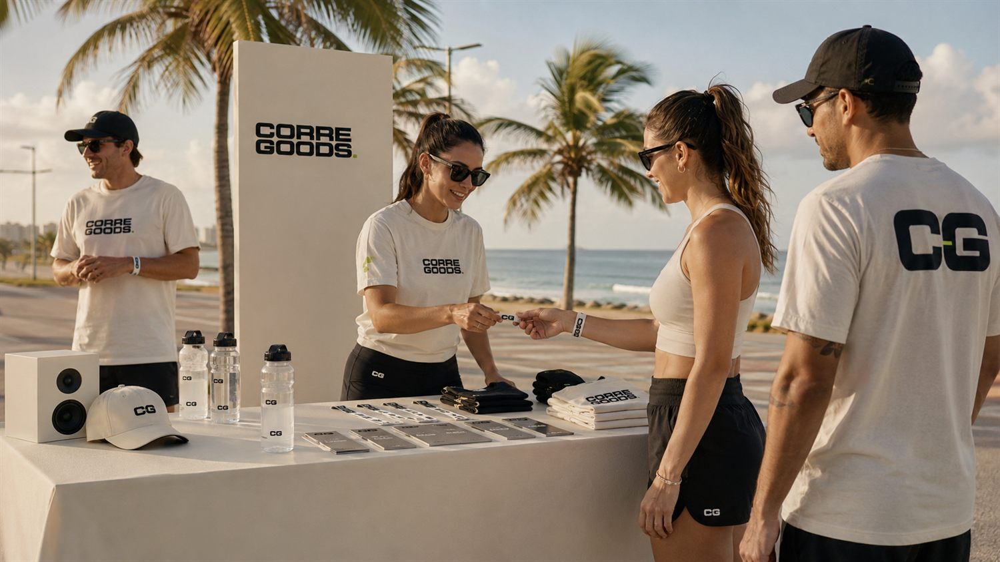
Lista, pulseira da edição e ponto de encontro. Kit e photo point logo na entrada, ainda no escuro da manhã.
Percurso acessível na orla, sem clima de prova. Sem cronômetro, sem pódio. O foco é estar junto.
O som acompanha a corrida durante todo o trajeto. A trilha não fica no ponto de chegada — ela vai junto.
Pós-corrida com música, social e consumo: bebidas, comida leve e produtos da edição. A parte que monetiza.
Marcas entram com experiência, produto e conteúdo — incluindo um after run 18+ com marca parceira.
Fotos, reels, aftermovie e collabs. O conteúdo dos participantes é o motor da próxima edição.
A primeira edição roda em formato piloto: 100 pagantes em média, em meados de outubro. 6km leve de manhã, DJ set acompanhando o percurso e after run que vende bebida, comida leve e produtos da marca. Barato de testar, forte de mostrar.
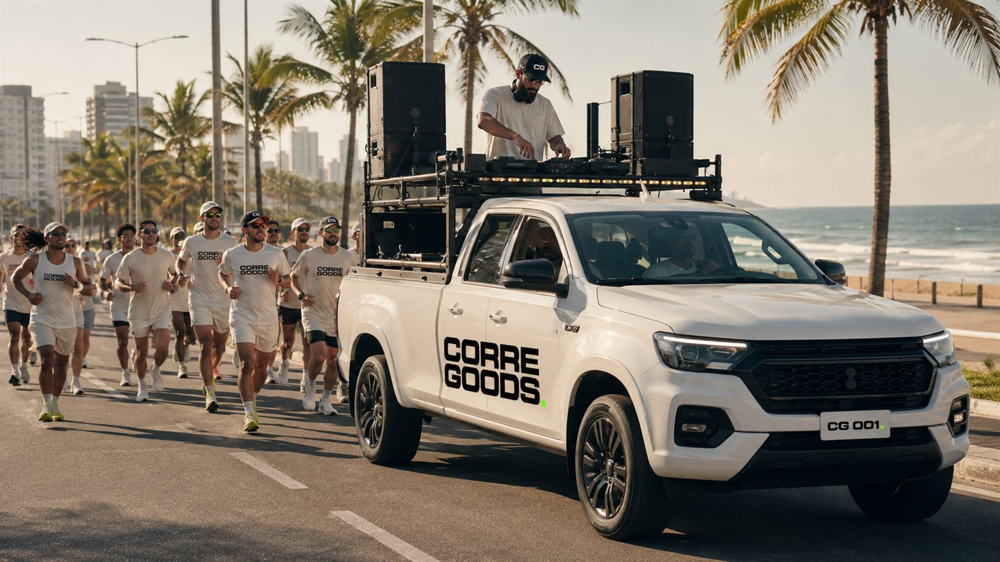
Imagem real CGA identidade do CORRE GOODS foi pensada para funcionar no corpo, na rua e no feed. A marca precisa ser reconhecida tanto numa camiseta quanto num story — off-white dominante, preto suave e o detalhe verde-ácido.
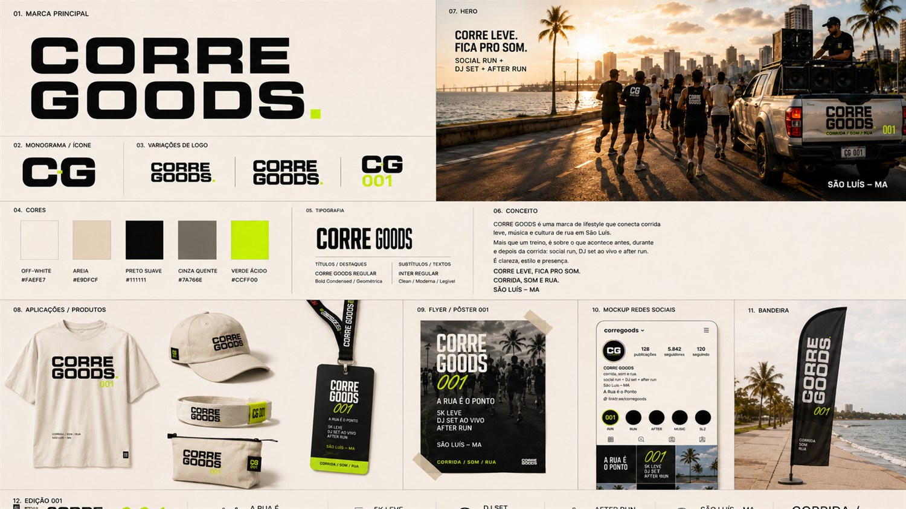
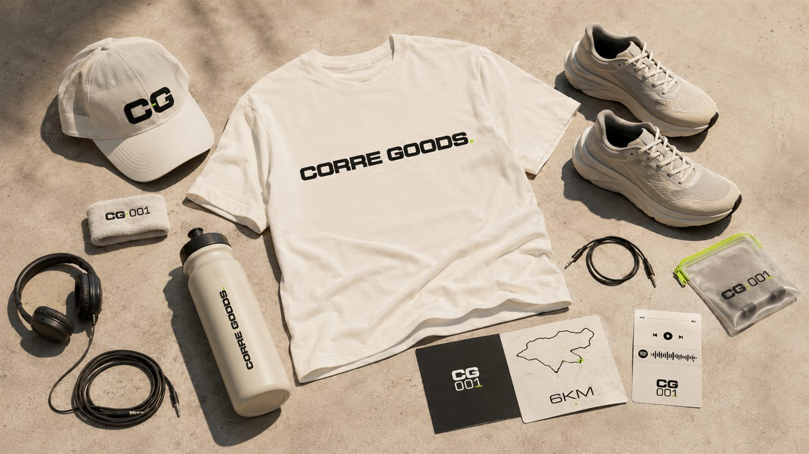
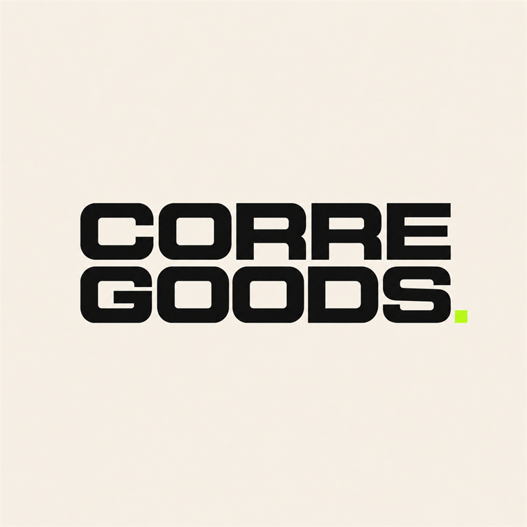
01 · Marca principal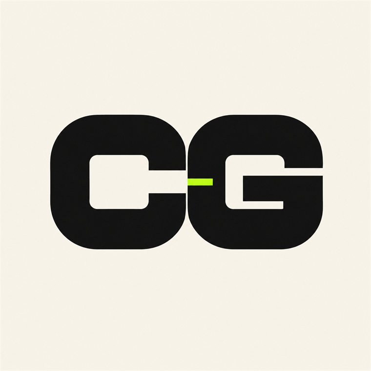
02 · Monograma / íconeGente que gosta de movimento, música, estilo, cidade, praia, conteúdo e bons encontros. Quem quer um rolê saudável e visual.
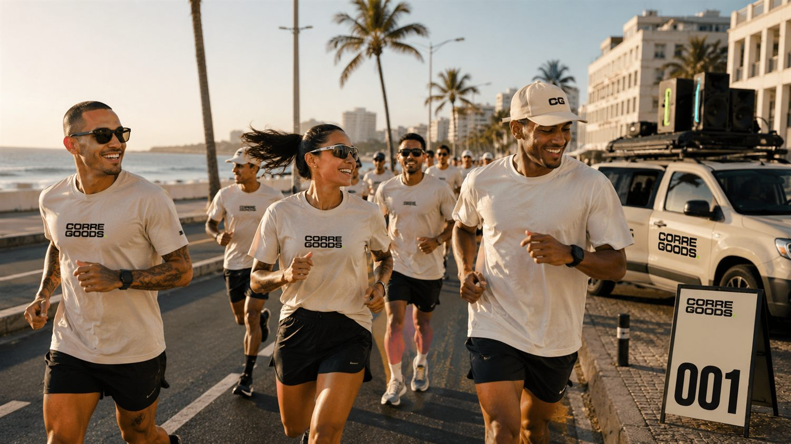
100 pagantes em média a ~R$ 49. Lotes limitados criam escassez e antecipam caixa antes do evento.
≈ R$ 4.900Venda de bebidas, comidas leves e produtos no pós-corrida. A chegada vira área de consumo e social.
ticket médio ≈ R$ 25Cerveja ultra 18+, café, água, recovery, moda ou lifestyle. Cota vendida por projeção e território.
R$ 1.500–5.000Camiseta off-white 001, boné e itens da edição. Drop limitado que vira pertencimento.
lucro ≈ R$ 40/peçaHipótese inicial, não promessa. Mas já mostra que o 001 deixa de ser "ideia legal" e vira um produto validável. E depois escala: membership, edições corporativas, branded content e collabs recorrentes.
O after run é onde o piloto monetiza. A linha de chegada vira uma pequena área de consumo e socialização: bebidas, comida leve, produtos da marca e ativações — tudo de manhã, leve e saudável.
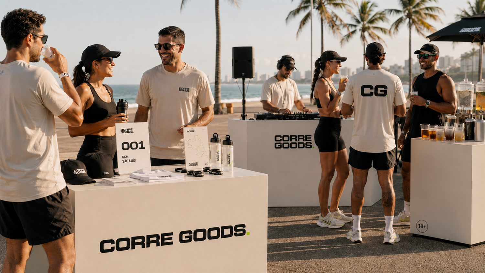
A ativação com uma marca de cerveja ultra entra só no after run, como experiência de consumo adulto, leve e alinhada ao lifestyle do projeto: ponto de venda, ambientação, sampling controlado, conteúdo e presença no material da edição. Corrida primeiro, after depois — água e opções sem álcool sempre em destaque.
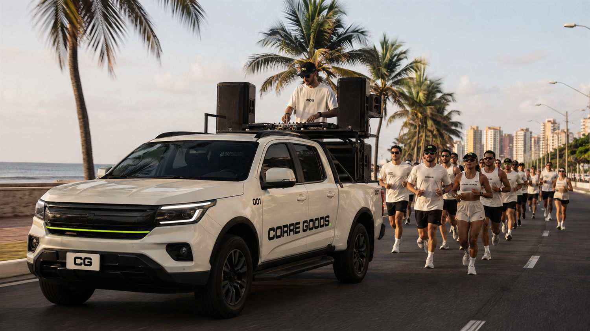
A cidade-ilha tem orla, praia, mar, calor social, música, vida ao ar livre e pontos visuais fortes. De manhã, a Litorânea entrega a primeira luz, o ar mais fresco e a melhor janela para correr. CORRE GOODS usa esse contexto como cenário para uma experiência contemporânea de social run com música eletrônica e street culture.
A cidade tem forte cultura de reggae, que respeitamos — mas não é o território do CORRE GOODS. O som aqui é eletrônico: house, afro house, organic, melodic, disco house e grooves solares.
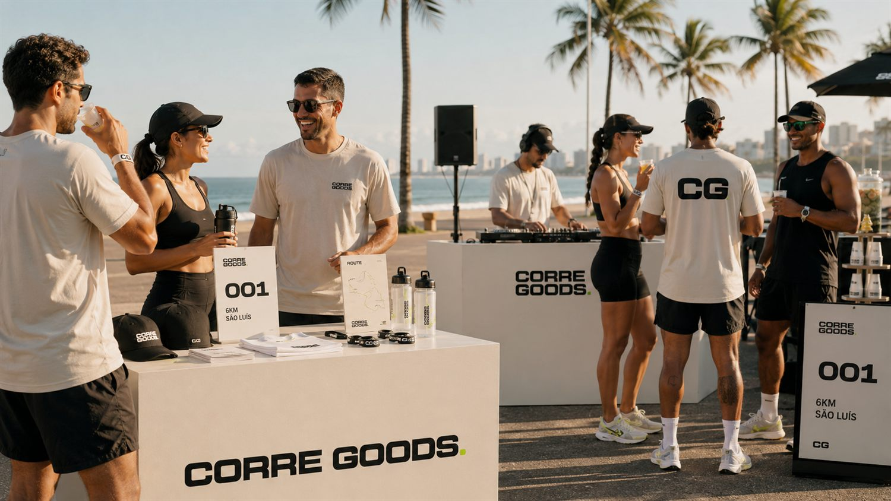
Imagem real CGIdentidade, rota de 6km na orla, DJ e carro de som, primeiros parceiros-âncora.
Abrir Instagram/TikTok, teaser, lista de espera e treininhos sociais grátis.
Fechar cotas e ativação 18+, definir local do after, abrir 1º lote limitado.
Rodar o 001 com ~100 pagantes. Capturar conteúdo, medir CAC e NPS.
A conversa mudou: não é "vamos criar uma marca/evento", é "vamos validar um produto de experiência com receita de ingresso, after run, ativação de marca e merch — e potencial de recorrência". Barato de testar, dados de verdade, escala por edição.
Identidade, curadoria musical, conteúdo e direção criativa. O território e a estética do projeto.
Investimento inicial, rede de parceiros e patrocínio, visão de negócio. O que destrava operação e comercial.
Produção do dia, captação de cotas, collabs locais, o 001 no chão e o plano de escala das próximas edições.
Não é divisão "um lado ou o outro" — são os dois somando para tirar a 001 do papel.
*Hipótese inicial, não promessa. Sem cronometragem e em área de menor interdição, o custo cai. Números a validar localmente.
Social run de 6km + DJ em movimento + after run monetizado. Lifestyle, não corrida institucional.
Mercado em alta, formato validado, nenhum concorrente direto em SLZ.
Orla, manhã fresca e calor social. A cidade entrega o cenário perfeito.
Fechar o investimento do 001 e rodar o piloto em meados de outubro.
Uma marca para correr, ouvir, vestir, postar e repetir. A chegada é só o começo.